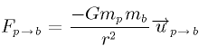
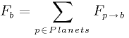
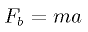
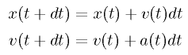
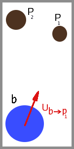
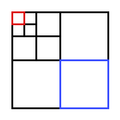
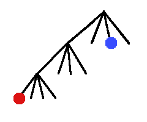

| back to API | back to index | back to guided tour index | prev | next |
|
|
This section of the guided tour goes through the different steps that could
take you to writing an application with ProActive, from a simple design, to a
more complicated structure. This is meant to help you get familiar with the
Group facilities offered by ProActive. Please take note that this page tries
to take you through the progression, step by step. You may find some more
information, mainly on the design, on the web page of the
applications/examples of proactive. This is a snapshot of the ProActive
nbody example running on 3 hosts with 8 bodies:

n-body is a classic problem. It consists in working out the position of bodies in space, which depend only on the gravitational forces that apply to them. A good introduction to the problem is given here. You may find a detailled explanation of the underlying mathematics here. Different ways of finding numerical solutions are given here.
In short, one considers several bodies (sometimes called particles) in space, where the only force is due to gravity. When only two bodies are at hand, this is expressed as
|

Fp->b is the force that p applies on b, G is the gravitational constant, mp mb describe the mass of the bodies, r is the distance between p and b, and u is a unit vector in the direction going from p to b. When we consider all the forces that apply to one given body, we have to sum up the contribution of all the other bodies : 
This
should be read as : the total force on the body p
is the sum of all the forces between b
and all the other bodies in the system. 
one
may now compute the movement of a particle for a given time step
(a
the acceleration, v
the velocity, x
the position, t
the time): 
|
 |
This guided tour is based on the files you may find in the directory ProActive/src/org/objectweb/proactive/examples/nbody. You'll find the following tree:

The common directory contains
files reused through the different
version. 'simple' is the simplest example, groupcom is the first
example with Group communication, and 'groupdistrib' and 'groupoospmd'
are two enhancement based on different synchronization schemes.
'barneshut' is a bit special, in that it contains a different algorithm
to solve the nbody problem.
The
files contained in 'common'
are those that are reused throughout
the different versions. Let's see what they do:
public
void drawBody(int x, int y, int vx, int vy, int weight, int d,
int id) ;
public
class Planet implements
Serializable{
public
double mass;
public
double x,y,vx,vy;
//
position and velocity
public
double diameter;
//
diameter of the body,
used by the Displayer
...
The Force class is just the
implementation of what a physical force
really is. It is the implementation of a 2D vector, with the
method add following the physics rule
// Construct deployment-related variables: pad & nodes
staticPad = null;
VirtualNode vnode;
try { staticPad = ProActive.getProactiveDescriptor(xmlFileName); }
catch (ProActiveException e) { abort(e); }
staticPad.activateMappings();
vnode = staticPad.getVirtualNode("Workers");
Node[] nodes = null;
try { nodes
= vnode.getNodes(); }
catch
(NodeException e) { abort(e); }
Node [] nodes
are the different JVMs that were created on possibly different
machines. They are used for Active Object creation. They were specified
in the descriptor used to deploy the application. You may find more
information on these
descriptors here, while Active
Object creation is explained in
this page.
Just as an example, in the
simple package, the Maestro is created on the first of theses JVMs, and
takes three parameters, a Domain
[], an Integer,
and a Start
(it will be detailed later)
:
Object [] constructorParams ;
constructorParams = {domainArray, new Integer(maxIter),
killsupport} ;
maestro
= (Maestro) ProActive.newActive ( Maestro.class.getName(),
constructorParams , nodes[0] ) ;
The files contained in the
other directories, 'simple', 'groupcom',
'groupdistrib' , 'groupoospmd' , detail steps of increasing complexity,
making the application use different concepts. 'barneshut' contains the
final implementation, featuring the Barnes-Hut algorithm. But let's not
go too fast. Let's have a look at the insides of the simplest
implementation of the n-body problem.
This is the implementation of
the simplest example of nbody. We defined
the Planet
to be a passive object, and it does nothing. It
is a container for position, velocity and mass, as we've seen in the
description given higher up. The real actors are the Domains,
they do
all the work. To every
Planet
in the universe, is associated a
Domain,
which is an
Active Object.
This
Domain
contains the code to manage the communication of the possitions of the Planets
during the simulation. They are created in the Start.java file :
Rectangle
universe = new Rectangle
(-100,-100,100,100);
Domain
[] domainArray = new
Domain
[totalNbBodies];
for (int i = 0 ; i < totalNbBodies ; i++) {
Object [] constructorParams
= new Object [] {
new Integer(i),
new Planet (universe)
};
try {
// Create all the Domains used in the simulation
domainArray[i] = (Domain) ProActive.newActive(
Domain.class.getName(),
constructorParams,
nodes[(i+1) % nodes.length]
);
}
catch (ActiveObjectCreationException e) { killsupport.abort(e); }
catch
(NodeException e) { killsupport.abort(e);
}
}
See how the call to
ProActive.newActive creates
one new Active Object,
a Domain,
at each iteration of the loop. The parameter nodes
contains all the nodes on which an Active Object may be deployed. The
constructorParams
are the parameters that are to be passed to the constructor of
Domain,
and since it's an Object []
, the parameters may only be Objects
(don't try to build constructors using ints in their
constructor - this explains the use of the class Integer).
The Domains,
once created, are initialized, and then they are
synchronized by all pinging the maestro, with the notifyFinished
call.
//
init workers
for (int i=0 ; i < totalNbBodies ; i ++)
domainArray[i].init(domainArray, displayer, maestro);
public
void init(Domain [] domainArray, Displayer dp, Maestro
master) {
.....
maestro.notifyFinished();
// say we're ready to start
}
public
void notifyFinished() {
this.nbFinished ++ ;
if (this.nbFinished == this.domainArray.length) {
this.iter ++;
if
(this.iter ==this.maxIter)
this.killsupport.quit();
this.nbFinished
= 0 ;
for
(int i= 0 ; i < domainArray.length ; i++)
this.domainArray[i].sendValueToNeighbours();
}
}
The synchronization is done by
the Maestro,
which counts the number of Domains that have finished,
and then asks
them to go on to the next iteration. While in their execution, the Domains
gather information concerning the position of all
the other bodies, which need to be known to move the local Planet,
at every time step. This is done using a push schema : instead of
explicitly asking for information, this information is automatically
issued :
public void sendValueToNeighbours()
{
for (int i = 0 ; i < this.neighbours.length ; i ++)
if (i != this.identification) // don't notify self!
this.neighbours[i].setValue(this.info,
this.identification);
.....
}
public
void setValue(Planet
inf, int id) {
this.values [id] = inf;
this.nbReceived
++ ;
if (this.nbReceived > this.nbvalues) // This is a bad
sign!
System.err.println("Domain " + identification + " received too many
answers");
if (this.nbReceived == this.nbvalues) {
this.maestro.notifyFinished();
moveBody();
}
}
This means that each Domain
sends its
information to all the other Domains,
and then waits until it has received all the positions it is waiting
for. The other Domains
are stored as an array. You may find another view of
this example on this web
page.
Then, this group is passed as parameter to all the members of the Group, in just one call:
domainGroup.init(domainGroup, displayer, maestro);
public
void init(Domain domainGroup,
Displayer dp, Maestro master) {
this.neighbours = domainGroup;
Group g = ProActiveGroup.getGroup(neighbours);
g.remove(ProActive.getStubOnThis());
// no need to send information to self
.....
for
(int i = 0 ; i < this.neighbours.length ; i ++)
if (i != this.identification) // don't notify self!
this.neighbours[i].setValue(this.info,
this.identification);
Well, that's BAAAAD! Replace this by the following code, because it works faster :
this.neighbours.setValue(this.info,
this.identification);
This
has the following meaning
: call the method setValue, with the given parameters, to all the
members of the Group neighbours.
You
may find another view of this example on this web
page.
public
void setValue(Planet inf, int
receivedIter) {
if (this.iter == receivedIter) {
this.currentForce.add(info,
inf);
this.nbReceived ++ ;
if (this.nbReceived > this.nbvalues)
System.err.println(identification + " : Too many answers " +
this.nbReceived + "/" + this.nbvalues);
if (this.nbReceived == this.nbvalues)
moveBody();
}
else {
if (this.iter > receivedIter)
this.killsupport.abort( new NullPointerException("Value arrives too
late!"));
this.prematureValues.add(new
Carrier (inf, receivedIter));
}
}
Also notice how the computation
is done when the result is received (this.currentForce.add(info,
inf);), instead of when all
the results have arrived. This allows for less time spent
idle. Indeed, waiting for all the results before
computing might leave idle time
between setValue requests. And then, just before computing the new
position of the body, the sum of all the forces has to be computed.
It's better to have this sum ready when needed.
The prematureValues Vector
is the place where we put the values that arrive out of sync. When
a value is early, it is queued there, and dequeued as soon as this
Domain
changes iteration.
public
void sendValueToNeighbours() {
reset();
this.iter++;
if (this.iter < this.maxIter) {
neighbours.setValue(this.info, this.iter);
...
treatPremature();
}
...
}
That
treatPremature() method
simply treats the values
that were early
as if they had just arrived, by calling the setValue method with the
parameters stored.
You
may find another view of this example on this web
page.
This is another way to improve
the groupcom example. It also removes
the master, but this time by inserting oospmd barriers, that can be
thought as behaving like the maestro
class, but faster. To create functional OOspmd Groups, there is a
special instruction,
which takes the same parameters as a newGroup instruction :
Object [][] params =
...
Domain domainGroup = null;
try {
domainGroup =
(Domain) ProSPMD.newSPMDGroup( Domain.class.getName(), params, nodes);
}
catch ...
Now, to use this OOspmd group properly, we want to use the barrier() methods. We put these in the Domains code, to do the synchronization. What happens is that each Domain hits the barrier call, and then waits for all the others to have reached it, before reading its request queue again.
public
void sendValueToNeighbours() {Beware, the stop-and-wait is
not just after the barrier call, but instead blocks the request queue.
So if there is code after that barrier, it will get
executed. In fact, the barrier should be seen as a prioritary request
on the queue. This explains why we had to put the code after the
barrier as a method placed on an asynchronous refernce to self. If we
hadn't done it that way, but just appended the code of
that method just after the barrier, the call to
this.neighbours.setValue(this.info,
this.identification);
ProSPMD.barrier("barrier" + this.iter);
this.iter++;
this.asyncRefToSelf.moveBody();
....
moveBody()
would be executed before
the barrier execution, which is exactly what we don't want!
You
may find another view of this example on this web
page.
To
avoid broadcasting to every active object the new position of every
particle, a tree implementation can simplify the problem by
agglomerating sets of particles as a single particle, with a mass equal
to the sum of masses of the all the particles:. This is the core of the
Barnes-Hut algorithm. References on this can be found for example here,
and here.
This method allows us to have a complexity brought down to O(N log N).
In
our parallel implementation, we have defined an Active
Object called
Domain,
which represents a volume in space, and which contains Planets.
It is either subdivided into smaller Domains,
or is a leaf of the total tree, and then only contains Planets.
A Planet is still an Object with mass, velocity and position, but is no
longer on a one-to-one connection with a Domain.
We have cut down communications to the biggest Domains
possible : when
a Planet
is distant enough, its interactions are not computed, but it is grouped
with its local neighbours to a bigger particle. Here is an example of
the Domains
which would be known by the Domain
drawn in red :
|  |
 |
The Domain in the lower left hand-corner, drawn in blue, is also divided into sub-Domains, but this needs not be known by the Domain in red : it assumes all the particles in the blue Domain are only one big one, centered at the center of mass of all the particles within the blue.
In this version, the
Domains
communicate with a reduced set of other Domains,
spanning on volumes of
different sizes. Synchronization is achieved by sending explicitely
iteration numbers, and returning when needed older positions. You may
notice that some Domains
seem desynchronized with other ones, having
several iterations inbetween. That is no problem because if they then
need to be synchronized and send each other information, a mechanism
saving the older positions permits to
send them when needed.
You may find another view of this example on this web page.
In
this guided tour, we tried
to show different facilities provided by
ProActive, based on a real problem (nbody). We first saw how to deploy
the application, then tuned it by adding Group communication, then
removed a bottleneck ( due to the hard synchronization ) . Finally,
given is the code associated to a different algorithm, which
cumbersomely shows how to get Active Objects deployed along a tree
structure to communicate. Remember that there is
another
explaination of all this on the
web.